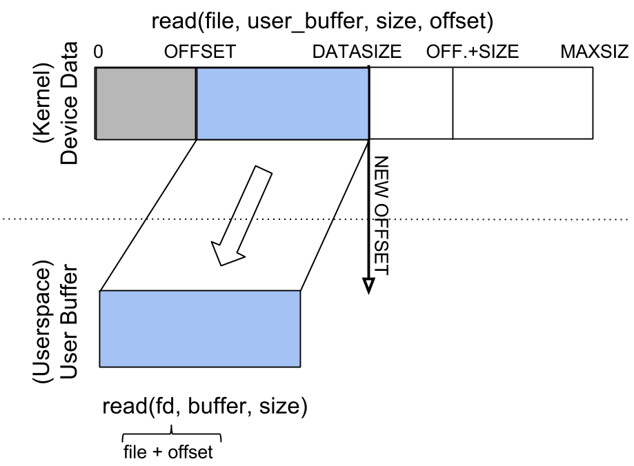
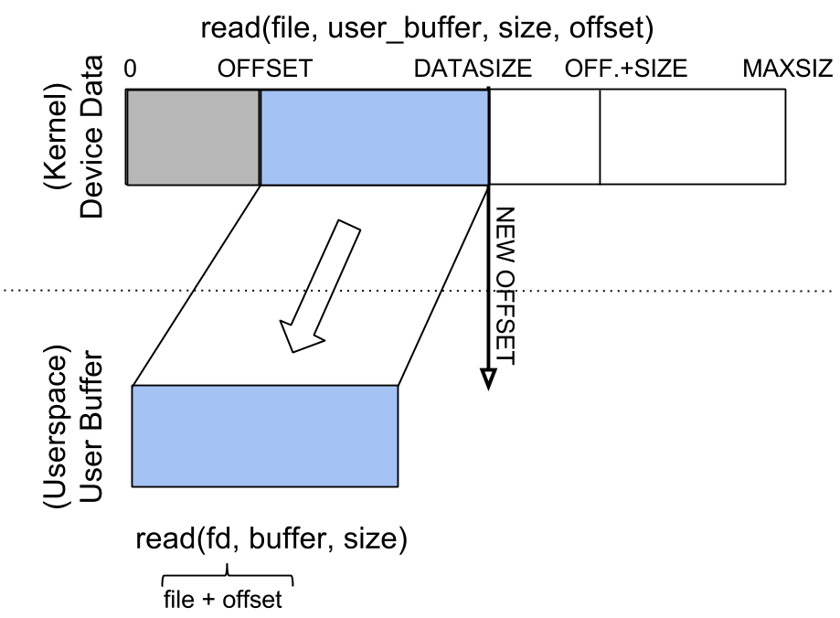

Intro
UNIX 시스템에서는 모든 장치들을 파일로 취급한다. /dev ë””ë ‰í† ë¦¬ì—는 시스템에 연결된 모든 장치들이 파일 형태로 존재하고 , open, write, close, lseek, mmap 등의 시스템 콜을 통해 ìš´ì˜ì²´ì œì—ì„œ device driver로 ì ‘ê·¼í• ìˆ˜ 있다.
Device Drivers: Character & Block
- 나누는 기준
- speed
- volume
- 시스템과 디바이스 간 데이터 ì „ì†¡ 방식 {/* - way of organizing data to be transferred from the device to the system and vice versa */}
Character Device Drivers
- 느린 장치들
- ì ì€ 양의 데이터를 관리한다.
- 데이터에 ì ‘ê·¼í•˜ê¸° 위해서 seek 쿼리를 자주 사용하지 않아도 ë¨
- 주로, 이러한 장치들에서의 Operation(Read, Write)는 Byte 단위로 순차ì 으로 이루어짐
- 예시: 키보드, 마우스, 시리얼 포트, 사운드 카드, 조이스틱 등
Block Device Drivers
- 데이터 볼륨이 큰 장치들
- 블록 단위로 데이터를 관리하는 장치들
- 검색이 잦은 장치들
- 데이터 Block 단위로 Operation이 수행됨
- 시스템 콜에 의해 ì§ì ‘ 다룰 수 ì—†ê³ , 파일 관리 subsystem과 block device subsystem을 통해 user-space와 block device driver가 소통함
- 예시: 하드 디스크, CD-ROM 드라이브, ë¨ 등
Majors and Minors
- Major: Device Type (IDE disk, SCSI disk, serial port 등)
- Minor: Device Instance (IDE disk 1, IDE disk 2, serial port 1, serial port 2 등)
linux/Documentation/admin-guide/devices.txt에서 모든 Major, Minor 번호를 확인할 수 있다.
ls -al $(find /dev -maxdepth 1 -type c) # character devices
ls -al $(find /dev -maxdepth 1 -type b) # block devicesAllocation
- Static Allocation
- Dynamic Allocation
Implementation Steps
1. Create a Device File
- ì§ì ‘ 등록
mknod <device_file> <type> <major> <minor>
mknod /dev/mycdev c 42 0 # character device
mknod /dev/mybdev b 42 0 # block device- 드라이버에서 자동등록
struct class *cls = class_create(device_name);
device_create(cls, NULL, dev, NULL, "d"); //creates a device and registers it with sysfs- Dynamic Minor?
2. Define Character Device Struct
struct my_device_data {
struct cdev cdev;
// My Data..
}- can be accessed by
file->private_datacontainer_of(inode->i_cdev, struct my_device_data, cdev)
3. Registration & Unregistration
- Registration
int register_cdev(void)
{
int err = register_chrdev_region(MKDEV(MY_MAJOR, 0), MY_MAX_MINORS, "my_device_driver");
if (err != 0) {
/* report error */
return err;
}
for(int i = 0; i < MY_MAX_MINORS; i++) {
/* initialize devs[i] fields */
cdev_init(&devs[i].cdev, &my_fops);
cdev_add(&devs[i].cdev, MKDEV(MY_MAJOR, i), 1);
}
return 0;
}- Unregistration
void unregister_cdev(void)
{
for(int i = 0; i < MY_MAX_MINORS; i++) {
/* release devs[i] fields */
cdev_del(&devs[i].cdev);
}
unregister_chrdev_region(MKDEV(MY_MAJOR, 0), MY_MAX_MINORS);
}4. Implement Operations
struct file_operations
- define driver operations https://elixir.bootlin.com/linux/v6.7.2/source/include/linux/fs.h#L1916
const struct file_operations my_fops = {
.owner = THIS_MODULE,
.open = my_open,
.read = my_read,
.write = my_write,
.release = my_release,
.unlocked_ioctl = my_ioctl
};Open & Release
Read & Write
Read
 

static int my_open(struct inode *inode, struct file *file)
{
struct my_device_data *my_data = container_of(inode->i_cdev, struct my_device_data, cdev);
/* validate access to device */
file->private_data = my_data;
/* initialize device */
...
return 0;
}Write


IOCTL
- input/output control